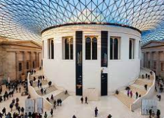

Una de las grandes atracciones de Londres son sus innumerables museos. los más importantes museos fueron
creados para la educación y el entretenimiento del pueblo y por ese motivo siguen siendo gratuitos.

El Museo Británico (en inglés: The British Museum) es un museo de la ciudad de Londres, Reino Unido, uno de los museos más importantes y visitados del mundo. Sus colecciones abarcan campos diversos del saber humano, como la historia, la arqueología, la etnografía y el arte.
El museo fue una de las primeras instituciones de este tipo en Europa, siendo el primer museo nacional en el mundo. Custodia más de ocho millones de objetos de todos los continentes, muchos de los cuales se encuentran almacenados para su estudio y restauración, o guardados por falta de espacio para exhibirlos.El Museo Británico (en inglés: The British Museum) es un museo de la ciudad de Londres, Reino Unido, uno de los museos más importantes y visitados del mundo. Sus colecciones abarcan campos diversos del saber humano, como la historia, la arqueología, la etnografía y el arte.
El museo fue una de las primeras instituciones de este tipo en Europa, siendo el primer museo nacional en el mundo. Custodia más de ocho millones de objetos de todos los continentes, muchos de los cuales se encuentran almacenados para su estudio y restauración, o guardados por falta de espacio para exhibirlos.El Museo Británico (en inglés: The British Museum) es un museo de la ciudad de Londres, Reino Unido, uno de los museos más importantes y visitados del mundo. Sus colecciones abarcan campos diversos del saber humano, como la historia, la arqueología, la etnografía y el arte.
El museo fue una de las primeras instituciones de este tipo en Europa, siendo el primer museo nacional en el mundo. Custodia más de ocho millones de objetos de todos los continentes, muchos de los cuales se encuentran almacenados para su estudio y restauración, o guardados por falta de espacio para exhibirlos.El Museo Británico (en inglés: The British Museum) es un museo de la ciudad de Londres, Reino Unido, uno de los museos más importantes y visitados del mundo. Sus colecciones abarcan campos diversos del saber humano, como la historia, la arqueología, la etnografía y el arte.
El museo fue una de las primeras instituciones de este tipo en Europa, siendo el primer museo nacional en el mundo. Custodia más de ocho millones de objetos de todos los continentes, muchos de los cuales se encuentran almacenados para su estudio y restauración, o guardados por falta de espacio para exhibirlos.